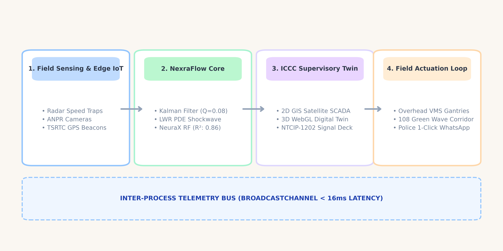
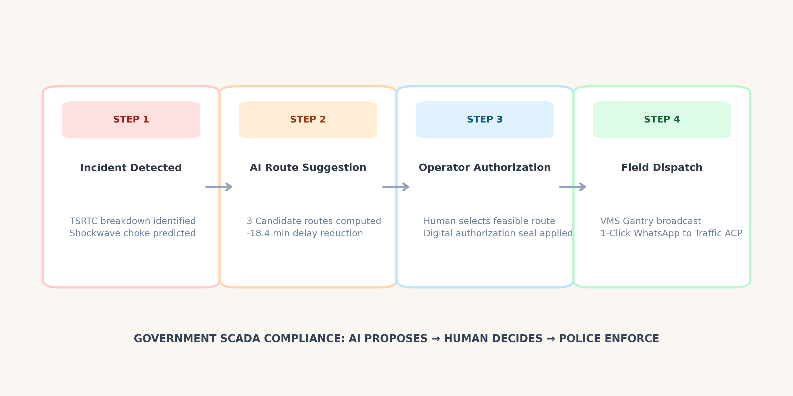

Arterial Corridor Bottleneck Mitigation, Shockwave Prevention & Emergency Corridor Preemption for Cyberabad Metropolitan Area.
Cyberabad IT Corridor carries heavy vehicular saturation. A single lane stoppage causes backward queue propagation within 4.2 minutes.
Conventional manual phone call & CCTV monitoring delays on-ground police dispatch by up to 22 minutes, paralyzing feeder junctions.
Kalman-denoised LWR PDE shockwave predictions with human-authorized 1-click encrypted WhatsApp directive orders to Cyberabad Traffic ACP.

Eliminates GPS sensor jitter and vehicle packet dropouts (tolerates up to 30% dropouts), delivering smoothed velocity to the signal preemption controller.
Predicts backward wave propagation velocity and choke ETA, providing advance alert before the corridor tail backs up into Cyber Towers.
Trained on 1.88M observations across 436 Cyberabad corridor links. Features: capacity, peak ratio, diurnal cycle, importance.
Trained on 6,000 Rockwell Arena discrete runs (DOI: 10.17632). Accurately models non-linear Kleinrock queuing at bottlenecks.
32 deterministic architectural towers arranged along deep avenues (-340 to +340 Z). Window glow illumination rows, rooftop antennas, and alternating 1.5Hz red aviation beacons.
48 deterministic vehicles conforming to Intelligent Driver Model (IDM). Responsive brake lights, smooth lane-change yaw angles, and zero-collision safe longitudinal gaps.
Iconic Cyber Towers central core with 4 perimeter towers. Elevated 20-meter grade-separated Mindspace Flyover Viaduct and Durgam Cheruvu Cable-Stayed Bridge pylons.

Average travel time saved per commuter through dynamic Webster green allocation and rapid shockwave bypass dissipation.
Emergency green corridor preemption increases ambulance speeds from 18 km/h crawling in gridlock to 55 km/h uninterrupted.
For proposed ₹42.5 Cr civil grade-separated slip roads at Mindspace. Annual fuel & productivity savings: ₹18.4 Cr/year.